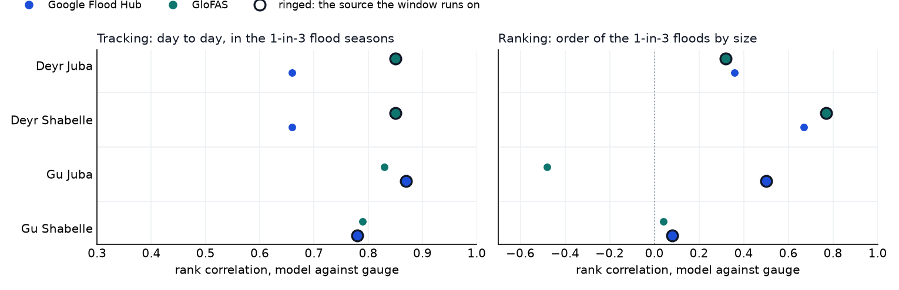
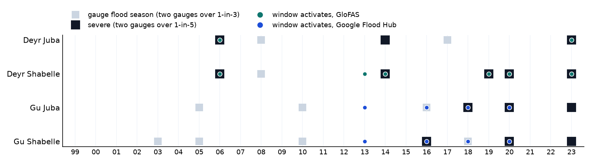
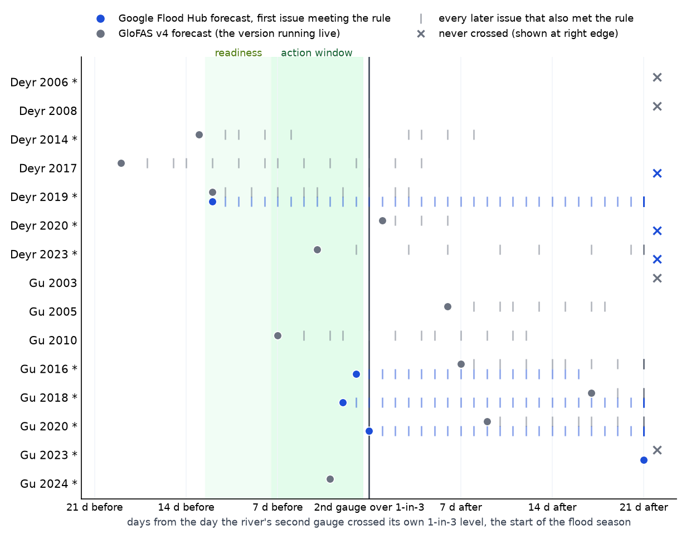

Summary of findings from the trigger analysis for the Juba and Shabelle rivers: the trigger, how it performs against the gauge record and the historical forecasts, and what runs live. Figures cover 1999 to 2023 unless stated. The full analysis is on the trigger analysis page.
The trigger covers two rivers and two rainy seasons, which gives four windows. Each window runs on one forecast source and one rule. If any one window activates, the full allocation is released.
| Window | Season | Source | Rule | Gauges |
|---|---|---|---|---|
| Deyr Juba | October to December | GloFAS | 3 of 4 gauges forecast over their own 1-in-4 level on the same day | Dollow, Luuq, Bardheere, Bualle |
| Deyr Shabelle | October to December | GloFAS | 2 of 3 gauges forecast over their own 1-in-4 level on the same day | Belet Weyne, Bulo Burti, Jowhar |
| Gu Juba | March to May | Google Flood Hub | 3 of 4 gauges forecast over their own 1-in-5 level on the same day | Dollow, Luuq, Bardheere, Bualle |
| Gu Shabelle | March to May | Google Flood Hub | 2 of 3 gauges forecast over their own 1-in-6 level on the same day | Belet Weyne, Bulo Burti, Jowhar |
Readiness activates 8 to 12 days ahead, either on the GloFAS ensemble forecast or on a SWALIM moderate flood risk alert for either river, and releases the mobilisation share. Action activates 1 to 7 days ahead and releases the rest. Thresholds are fitted on each source's own record.
Why action stops at 7 days. Google Flood Hub, the Gu source, forecasts 7 days ahead and no further. GloFAS forecasts run longer, but the ensemble's high flows fall away with lead time. By day 7 they are about 12 per cent below the day-1 forecast, and by day 12 about 26 per cent below. Over the years both GloFAS archives cover, the same rule activated 4 times at 1 to 7 days and once at 8 to 12 days. Days 8 to 12 are therefore used for readiness rather than action.
The trigger is scored against the SWALIM gauge record. A river has a flood season when two of its gauges reach their own 1-in-3 level, and a severe season when two reach their 1-in-5 level. Each gauge's levels are fitted on its own record from 2000 to 2023.
| Window | Flood seasons | Severe | Severe years |
|---|---|---|---|
| Deyr Juba | 5 | 3 | 2006, 2014, 2023 |
| Deyr Shabelle | 6 | 5 | 2006, 2014, 2019, 2020, 2023 |
| Gu Juba | 6 | 3 | 2018, 2020, 2023 |
| Gu Shabelle | 7 | 3 | 2016, 2020, 2023 |
Across both rivers there are 12 flood years, of which 7 are severe. Gauges are capped at bank full, so the largest floods record the same reading. A season in which only one gauge crosses does not count, as in Gu 2021 at Belet Weyne.
Three global models were considered. GEOGloWS runs 4 to 10 times too high on the Shabelle and has no forecast archive, and was not taken further. Google Flood Hub and GloFAS were compared with the SWALIM gauges on their own records of the past, Google's retrospective run and GloFAS's version 5 reanalysis, using only the seasons in which the gauge reached its own 1-in-3 level between 2000 and 2023 (2 to 10 seasons per gauge). Both measures are Spearman correlations, which compare ranks rather than raw values, and both are shown as the median across the river's gauges; ranking needs at least four seasons, which leaves Dollow out of it.
| Tracking | Ranking | ||||
|---|---|---|---|---|---|
| Window | Google Flood Hub | GloFAS | Google Flood Hub | GloFAS | Chosen |
| Deyr Juba | 0.66 | 0.85 | 0.36 | 0.32 | GloFAS |
| Deyr Shabelle | 0.66 | 0.85 | 0.67 | 0.77 | GloFAS |
| Deyr, both rivers | 0.66 | 0.85 | 0.62 | 0.62 | GloFAS |
| Gu Juba | 0.87 | 0.83 | 0.50 | -0.48 | Google Flood Hub |
| Gu Shabelle | 0.78 | 0.79 | 0.08 | 0.04 | Google Flood Hub |
| Gu, both rivers | 0.86 | 0.79 | 0.20 | -0.03 | Google Flood Hub |

In Deyr, GloFAS tracks the gauges far more closely than Google (0.85 against 0.66). Google also over-activates in Deyr, with three Juba activations in years with no flood, and misses the Shabelle in 2020. In Gu, Google tracks more closely on the Juba and level with GloFAS on the Shabelle, orders the floods closer to the gauges' order, and its forecasts went out before the flood where GloFAS v4's mostly went out after it, as the next section shows. Gu Shabelle reads near zero on ranking for every model because the gauge is capped at bank full in the largest floods.
Every threshold sits at 1-in-3 or rarer. The vote counts were set so that the mechanism as a whole activates about once in three years while still catching every severe season.
| Activations, 25 years | Return period | Years | |
|---|---|---|---|
| Deyr Juba | 2 | 1-in-13.0 | 2006, 2023 |
| Deyr Shabelle | 6 | 1-in-4.3 | 2006, 2013, 2014, 2019, 2020, 2023 |
| Gu Juba | 4 | 1-in-6.5 | 2013, 2016, 2018, 2020 |
| Gu Shabelle | 4 | 1-in-6.5 | 2013, 2016, 2018, 2020 |
| Juba, either window | 6 | 1-in-4.3 | 2006, 2013, 2016, 2018, 2020, 2023 |
| Shabelle, either window | 8 | 1-in-3.2 | 2006, 2013, 2014, 2016, 2018, 2019, 2020, 2023 |
| Whole mechanism | 8 | 1-in-3.2 | 2006, 2013, 2014, 2016, 2018, 2019, 2020, 2023 |
Activations, impact and response, year by year, as on the analysis page. The trigger column is the peak number of monitored points over their thresholds at the same time that season, filled red where the window activates. RP is the gauge benchmark above: 5yr where two of the river's gauges reached their own 1-in-5 level that season, 3yr where two reached 1-in-3 but not 1-in-5. The table fits each gauge's levels on its record from 2000 to its last reading, which runs into 2024 for some gauges, where the rest of this page stops at 2023; the two differ in one cell, Deyr Juba 2008, 5yr here and 1-in-3 above. EM-DAT is people affected and CERF the allocation from the UN Central Emergency Response Fund in US dollars, each attributed to the river named in the record; an event naming both rivers is counted under both, and an allocation naming neither is shown under both and marked *.
| loading |

The tests above use each model's record of the past, whereas the trigger runs on forecasts. The historical forecasts were therefore replayed to find the day the alert would have gone out, 1 to 7 days ahead, and that day was compared with the day the flood season began at the gauges, which is the day the river's second gauge crossed its own 1-in-3 level (the first gauge may have crossed days earlier). Either river counts. Only Google Flood Hub (2016 to 2023) and GloFAS v4 (2003 to 2023, plus the live Gu 2024 forecasts) have archives. GloFAS's archive holds two issue days a week (104 a year) where Google's holds every day, so replayed GloFAS lead times are coarser by up to three days. The live GloFAS forecast is daily.

In Deyr, GloFAS v4 activated before the second gauge crossed in 4 of 7 seasons and was first in 3 of the 4 seasons both archives cover. In Gu, Google was first in all 4. On the Shabelle it gave 10 to 13 days of warning in three of four seasons, where GloFAS v4 gave 3 days once and nothing in the other three. The lead-time comparison and the calibration were done independently and point the same way.
| Season | River(s) that flooded | Second gauge over 1-in-3 | Google Flood Hub forecast | GloFAS v4 forecast | First |
|---|---|---|---|---|---|
| Deyr 2006 * | Juba and Shabelle | 30 Oct | no archive | rule never met | |
| Deyr 2008 | Juba and Shabelle | 15 Nov | no archive | rule never met | |
| Deyr 2014 * | Juba and Shabelle | 20 Oct | no archive | 13 d beforeShabelle, 7 Oct | |
| Deyr 2017 | Juba | 7 Nov | rule never met | 19 d beforeJuba, 19 Oct | GloFAS v4 |
| Deyr 2019 * | Shabelle | 14 Oct | 12 d beforeShabelle, 2 Oct | 12 d beforeShabelle, 2 Oct | tie |
| Deyr 2020 * | Shabelle | 1 Oct | rule never met | 1 d afterShabelle, 2 Oct | GloFAS v4 |
| Deyr 2023 * | Juba and Shabelle | 25 Oct | rule never met | 4 d beforeJuba, 21 Oct | GloFAS v4 |
| Gu 2003 | Shabelle | 11 May | no archive | rule never met | |
| Gu 2005 | Juba and Shabelle | 12 May | no archive | 6 d afterShabelle, 18 May | |
| Gu 2010 | Juba and Shabelle | 18 May | no archive | 7 d beforeShabelle, 11 May | |
| Gu 2016 * | Juba and Shabelle | 1 May | 1 d beforeShabelle, 30 Apr | 7 d afterShabelle, 8 May | |
| Gu 2018 * | Juba and Shabelle | 17 Apr | 2 d beforeJuba, 15 Apr | 17 d afterJuba, 4 May | |
| Gu 2020 * | Juba and Shabelle | 22 Apr | same dayShabelle, 22 Apr | 9 d afterJuba, 1 May | |
| Gu 2023 * | Juba and Shabelle | 25 Mar | 32 d afterShabelle, 26 Apr | rule never met | |
| Gu 2024 * | Juba and Shabelle | 8 May | no archive | 3 d beforeJuba, 5 May |
SWALIM's bulletins were first in 6 of the 8 seasons in which both SWALIM and the window's source flagged, and SWALIM alone flagged in 5 further seasons. First means the bulletin date against the day the window's rule was met on the source's own record, since GloFAS version 5 has no forecast archive. The bulletins are forward-looking and often early, and a SWALIM moderate flood risk alert for either river therefore activates readiness. They cannot carry the action phase, because CERF needs an activation basis that can be backtested and the bulletins are expert judgement rather than a fixed rule.
| Season | River | SWALIM first bulletin | Who was first |
|---|---|---|---|
| Deyr 2006 | Juba | 2006-10-31 | GloFAS v5 2 d before SWALIM |
| Deyr 2006 | Shabelle | 2006-10-31 | SWALIM 2 d before GloFAS v5 |
| Deyr 2014 | Juba | 2014-10-15 | SWALIM only; GloFAS v5 rule never met on its record |
| Deyr 2014 | Shabelle | 2014-10-15 | SWALIM 1 d before GloFAS v5 |
| Deyr 2019 | Juba | 2019-10-22 | SWALIM only; GloFAS v5 rule never met on its record |
| Deyr 2019 | Shabelle | 2019-10-22 | GloFAS v5 11 d before SWALIM |
| Deyr 2020 | Shabelle | 2020-09-08 | no bulletin for the October rise |
| Deyr 2023 | Juba | 2023-10-20 | SWALIM 9 d before GloFAS v5 |
| Deyr 2023 | Shabelle | 2023-10-21 | SWALIM 19 d before GloFAS v5 |
| Gu 2016 | Shabelle | no bulletin | no SWALIM bulletin; Google 12 May |
| Gu 2020 | Juba | 2020-04-27 | SWALIM 2 d before Google |
| Gu 2020 | Shabelle | 2020-04-27 | SWALIM 3 d before Google |
| Gu 2021 | Juba | 2021-05-10 | SWALIM only; Google rule never met on its record |
| Gu 2021 | Shabelle | 2021-05-10 | SWALIM only; Google rule never met on its record |
| Gu 2023 | Shabelle | 2023-05-08 | SWALIM only; Google rule never met on its record |
| Gu 2024 | Juba | 2024-05-09 | Google record ends 2023 |
| Gu 2024 | Shabelle | 2024-04-19 | Google record ends 2023 |